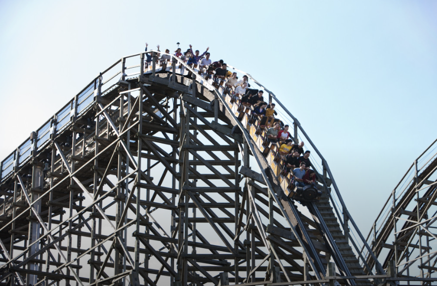

경기도의 명소
평택시농업생태원

(경기 평택시 오성면 청오로 33-34)
평택시농업생태원은 시민 여러분과 대자연의 아름다움을 같이할 수 있도록
꽃과 축제의 장을 마련합니다. 도시와 농촌이 상생하여 시민 모두가 행복한
삶의 질 향상, 농촌테마공원을 통한 농업농촌체험으로 도농교류를 촉진합니다.
꽃과 축제의 장을 마련합니다. 도시와 농촌이 상생하여 시민 모두가 행복한
삶의 질 향상, 농촌테마공원을 통한 농업농촌체험으로 도농교류를 촉진합니다.
에버랜드
(경기 용인시 처인구 포곡읍 에버랜드로 199)
영원과 활력을 의미하는 ‘EVER’와 자연과 포근함을 상징하는 ‘LAND’를 결합한 이름의
에버랜드 리조트는 1976년 ‘자연농원’으로 시작해 현재까지 한국의 여가 문화를
선도하고 있습니다. 에버랜드 리조트의 드라이 파크인 에버랜드는 다채로운 축제와
어트랙션, 동물원과 식물원으로 구성된 글로벌 테마파크입니다. 5개의 테마존과 계절마다
모습을 달리하는 다양한 축제, 최신 어트랙션 등 다채로운 시설과 서비스로 고객들에게
최고의 즐거움을 선사합니다
에버랜드 리조트는 1976년 ‘자연농원’으로 시작해 현재까지 한국의 여가 문화를
선도하고 있습니다. 에버랜드 리조트의 드라이 파크인 에버랜드는 다채로운 축제와
어트랙션, 동물원과 식물원으로 구성된 글로벌 테마파크입니다. 5개의 테마존과 계절마다
모습을 달리하는 다양한 축제, 최신 어트랙션 등 다채로운 시설과 서비스로 고객들에게
최고의 즐거움을 선사합니다